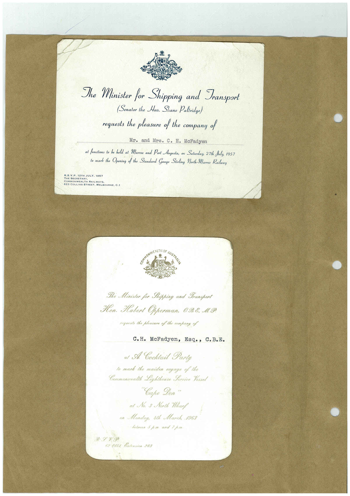

Book 1 · scan 015


Description
Transcription
Context
Review notes
Compare the machine draft with the scan. Handwriting and names need human review.
Artifacts
Edit the artifacts field in this note’s frontmatter to change these records. This summary is generated.
B01-S015-A01 — Invitation — Book 1, scan 015
Types: Invitation
Scope: Whole scanned page; individual items can be split out during review.
Caption: Not mapped yet.
Caption source: Not recorded yet.
Caption status: unmapped
Machine transcription
The Minister for Shipping and Transport (Senator the Hoir. Shane Paltridge) requests the pleasure of the company of Mr. and Mrs. C. H. McFadyen at functions to be held at Marree and Port Augusta, on Saturday, 27th July, 1957 to mark the Opening of the Standard Gauge Stirling North-Marree Railway R.S.V.P. 12TH JULY. 1957 THE SECRETARY COMMONWEALTH RAILWAYS 623 COLLINS STREET. MELBOURNE, C.I The Ministon for Shipping and Transport Hon. Hubert Opperman, 098. M.Ф. roguests the plotsure of the company of C. H. McFadyen, Esq., C.B.E. al A Cooktail Parly lo mark the maiden voyage of the Commonwalth Lighthouse Fornice Yessol "Саро Доп" at No. 3 North Wharf on Monday, ith March, 1963 52 015% Entension 283